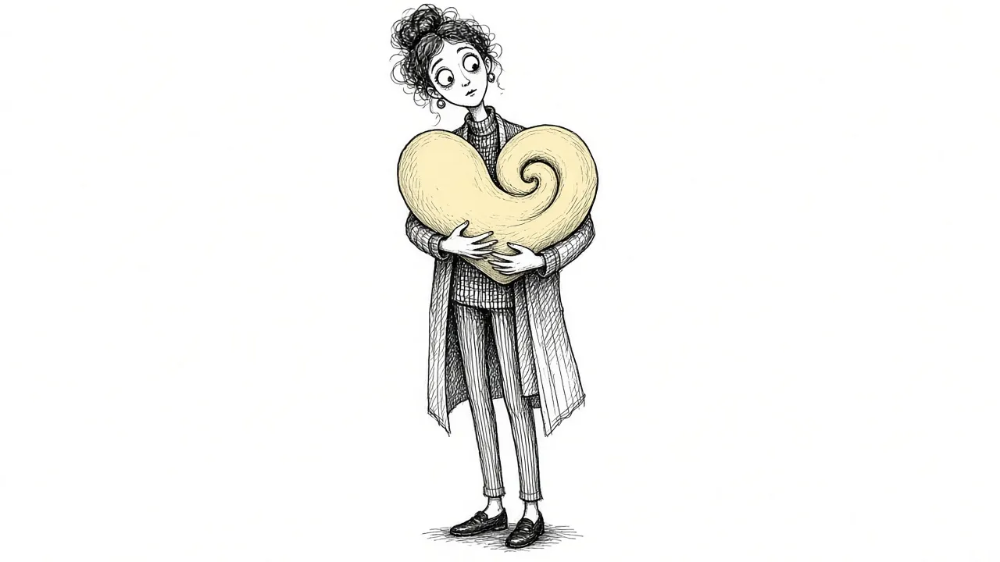

Why Your Grief Keeps Changing Shape

One week grief feels like a weight on your chest. The next it is a hollow restlessness. A month later, you feel almost fine, and then a song in a coffee shop knocks the air out of you. If your grief keeps changing shape, you may wonder whether you are making progress at all, or whether something is wrong.
Nothing is wrong. Grief is not one feeling that slowly shrinks. It is a living process that shifts as you shift, as your life changes, and as you learn more about what the loss means. This guide explores why grief changes shape over time and how to meet each new version of it.
Grief is not a single emotion
When people think of grief, they often imagine sadness. In reality, grief is a whole collection of experiences: longing, anger, guilt, fear, numbness, relief, love, exhaustion, and moments of peace. At different times, different parts of that collection come to the front.
Early on, shock and disbelief might dominate. Later, sadness may take over. Further along, you might notice loneliness or questions about who you are now. These are not separate griefs. They are different faces of the same one. Our guide Grief Symptoms: More Than Just Crying describes the full range.
Why grief keeps shifting
Your mind is processing in layers
Losing someone important is too big to take in all at once. The mind tends to process it in pieces. First the fact of the death. Then the practical changes. Then the emotional absence. Then the future that will not happen. Each layer brings its own feelings.
Life keeps changing around you
As the months and years pass, your life moves. You change jobs, move homes, reach milestones, meet new people. Each change can bring grief back in a new form. A wedding might bring grief that your parent is not there. A new baby might bring grief that they will never meet them.
You keep discovering what you lost
Some losses only become clear over time. You may not realize how much they handled until a task falls to you. You may not notice how much you relied on their advice until you face a big decision alone. These discoveries, sometimes called secondary losses, reshape grief again and again.
Your relationship with them is evolving
Even after death, your relationship with someone continues to change. You might understand them better as you age. You might see their choices differently. You might find new ways to feel close to them. As the relationship shifts, the grief shifts with it.
Grief changes shape because you are still growing, and the love is still growing with you.
Common shapes grief can take
Here are some of the forms grief often takes over time. You might recognize some and not others.
- Acute grief. The early, intense period of shock, pain, and disorientation.
- Waves. Sudden surges of grief that come and go, often triggered by reminders. See Grief Waves.
- Background grief. A quieter, steady ache that sits under daily life.
- Anniversary grief. Surges around birthdays, holidays, and the date of the death.
- Milestone grief. New grief at life events they are not there for.
- Integrated grief. A settled kind of grief where the loss is part of your life, with room for other things too.
People rarely move through these in order. You might feel integrated for months and then experience a wave as sharp as the early days.
Why the changes can feel unsettling
When grief changes shape, it can feel like starting over. You may have learned how to cope with one version, only to face a new one. That can be discouraging.
It can also feel confusing. If you felt okay last month, why are you struggling now? It is easy to conclude that you have gone backward. In most cases, you have not. You are encountering a new layer, not losing ground.
How to meet each new shape
1. Name what you notice
When grief shifts, try to describe it. "This feels more like loneliness than sadness." "This is the anger again." Naming the shape can make it feel less overwhelming.
2. Adjust what you need
What helped in one season of grief may not help in another. Early on, you might have needed company. Later, you might need quiet. Pay attention to what serves you now.
3. Expect milestones to stir things up
Upcoming events like holidays, graduations, or weddings can bring grief forward. Planning ahead, even a little, can help. You might choose a small way to honor them on the day.
4. Stay connected
Continuing bonds can help grief feel less like loss alone. Keeping their memory part of your life can ease the sharpness of new shapes. Read Continuing Bonds for ideas.
5. Keep your support close
Grief that changes shape often benefits from ongoing support. Friends who check in, a support group, or a counselor can help you through new phases.
A simple practice for new shapes
When grief arrives in a form you do not recognize, try a short check-in with yourself:
- What am I feeling right now? Give it a name, even if the name is "I do not know."
- Where do I feel it? In the chest, the stomach, the shoulders?
- What set it off, if anything? A date, a place, a conversation, a smell?
- What do I need in the next hour? Rest, company, movement, quiet, a good cry?
You do not need to solve anything. The point is to meet the new shape with curiosity instead of alarm.
When changes signal something more
Most shifts in grief are normal. Sometimes, though, grief can turn into something that needs extra help. Consider reaching out to a professional if:
- The grief has become more intense over time rather than changing
- You cannot function at work or at home for an extended period
- You feel hopeless most of the time
- You have pulled away from nearly everyone
- You are having thoughts of ending your life
These may be signs of prolonged grief or depression. Learn more in Grief vs. Depression.
If you are thinking about harming yourself, please call or text 988 right now to reach the Suicide and Crisis Lifeline.
A living kind of grief
It might help to think of grief less as something you are getting through and more as something you are living with. Like any part of life, it changes. Some seasons are harder. Some are gentler. Each shape tells you something about what the loss means to you and what you need now.
You are not going backward when grief changes. You are continuing to grieve someone who mattered, in a life that keeps moving. That is not a failure. It is love, taking whatever shape it needs.
This article is for general information and support. It is not medical or mental health advice. If grief has become unbearable or you are thinking about harming yourself, call or text 988 right now.
Related reading

Grief Alongside Depression and Anxiety
Grief often arrives alongside other mental health challenges. How to recognize overlap and get support for all of it.

Why Your Brain Keeps Replaying Their Last Days
Memories of the final days or moments can loop relentlessly. Here is why that happens and how to let the rest of their life back in.

Rumination in Grief: Getting Off the "What If" Wheel
Endless what-ifs and if-onlys can trap grieving people. Learn why rumination happens and gentle ways to step off the wheel.